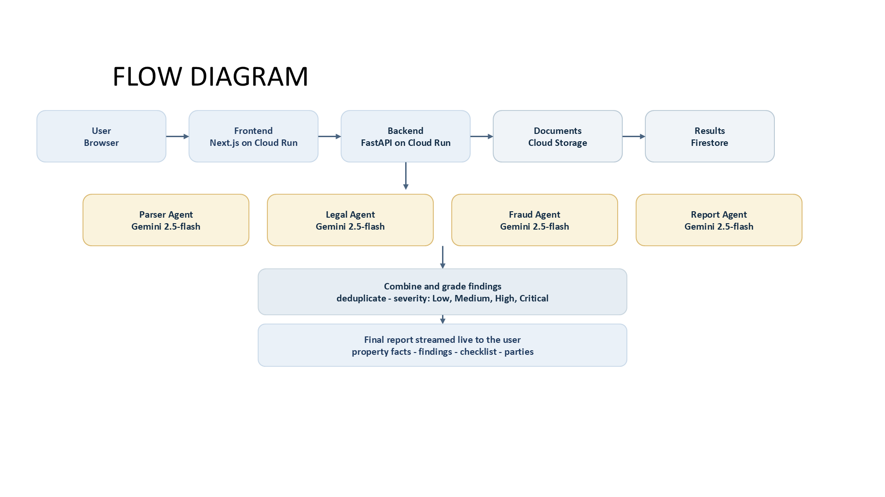
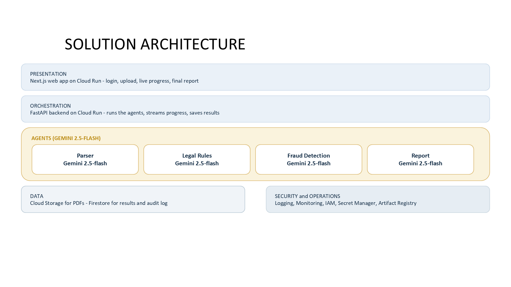

Landshield — Solution Document
AI-powered due diligence for Indian land documents Infosys Gemini Hackathon 2026 · Team Landshield · AI Agents in Action
Section 1: Problem Statement
Indian land transactions are the single largest financial decision most families make, yet they are also the most opaque and fraud-prone. A single deal typically involves 8–10 documents — sale deed, encumbrance certificate (EC), mutation extract, tax receipts, building plan approval, parent documents going back 30 years, RERA registration, khata, and survey records.
Buyers, banks, and even law firms face four compounding pain points:
- Information overload. Each document is 20–80 pages of dense legal Hindi/English/regional script. A buyer cannot read them; a lawyer charges ₹25,000–₹2,00,000 and takes 4–8 weeks.
- Hidden fraud patterns. Roshni Act allotments, tribal-land sales (PESA, Fifth Schedule), benami transfers, undervaluation, name mismatches across the chain of title, and forged ECs are extremely hard to spot manually.
- Fragmented law. Rules vary by state (Karnataka vs Telangana vs J&K), by land type (agricultural, urban, tribal), and across central acts (TPA 1882, Registration Act 1908, Stamp Act 1899, RERA 2016, Benami Act 1988).
- No standard verdict. Two lawyers reviewing the same bundle often disagree. Buyers get a 30-page legal opinion with no clear go / clarify / stop outcome.
The result: 66% of civil litigation in India is land-related (Niti Aayog, 2017), and an estimated ₹2–3 lakh crore is locked in title-dispute cases. Buyers either skip due diligence and lose money, or pay heavily and still receive ambiguous reports.
Section 2: Solution Overview
Landshield is a multi-agent Gen AI system on Google Cloud that ingests a buyer's full land-document bundle and returns a lawyer-style verification report in under 90 seconds.
The user uploads PDFs, picks the state and land type, and Landshield orchestrates four specialised Gemini 2.5 agents in parallel:
- A Parser Agent reads the multi-page PDFs natively (no OCR pre-step) and extracts a strict JSON schema: parties, property, area, stamp duty, registration details, chain of title, dates.
- A Legal Rules Agent validates the extracted data against Indian land law — registration, stamp duty adequacy, state-specific restrictions, RERA compliance.
- A Fraud Detection Agent flags concrete risk patterns — name mismatches, chain-of-title gaps, undervaluation, tribal/Roshni indicators, benami signals.
- A Report Agent consolidates everything into a graded summary with severity counts (low / medium / high / critical) and recommended next steps.
Findings are persisted to Firestore, streamed to the frontend via Server-Sent Events, and high-risk patterns are pushed to BigQuery via Pub/Sub for cross-user fraud analytics.
The output is not a chatbot answer — it is a structured, auditable, lawyer-grade report.
Section 3: Domain and Sub-Domain
| Layer | Value |
|---|
| Primary domain | Real Estate |
| Secondary domain | Legal Tech / RegTech |
| Sub-domains served | Document verification · Fraud detection · Compliance / due-diligence assistance · Risk grading |
| Industries that consume it | Residential & commercial buyers · Banks (home-loan title checks) · NBFCs · Title insurers · Developers (land acquisition) · Law firms (litigation prep) · Government registrars (anomaly screening) |
| Geography | India (Karnataka, Telangana, Maharashtra, Tamil Nadu, Delhi-NCR, J&K first; pan-India by design) |
| Regulatory frameworks encoded | Transfer of Property Act 1882 · Registration Act 1908 · Indian Stamp Act 1899 · RERA 2016 · Benami Property Act 1988 · PESA 1996 · State-specific land-revenue acts · J&K Roshni Act |
Section 4: End-to-End Business Process — Agent Flow & Agent Count
Number of agents: 5 — 1 Orchestrator (controller) + 4 specialised Gemini 2.5 agents.
Agent flow

Step-by-step business process
- Buyer signs in (Firebase Auth) and uploads a bundle (sale deed, EC, mutation, tax receipts, building plan).
- Frontend pushes files to FastAPI; backend stores them in GCS (signed URLs) and creates a Firestore record (
status=queued). - Orchestrator publishes an
analysis_jobs message to Pub/Sub; a Cloud Run worker picks it up. - Parser Agent extracts a structured JSON schema from every document.
- Legal Rules Agent and Fraud Detection Agent run in parallel on the extracted data.
- Findings are normalised, deduplicated, consolidated, and graded by severity.
- Report Agent generates the final lawyer-style report.
- Report is persisted to Firestore; if
risk_score ≥ 60, a fraud_alert is published to Pub/Sub → BigQuery streaming insert for cross-user pattern detection. - SSE stream pushes live progress + final report to the buyer's browser.
- Cloud Logging + Cloud Monitoring capture agent latency, model cost, and error rates throughout.
Section 5: Architecture Diagram — GCP Services Used

GCP service inventory
| GCP Service | Role in Landshield |
|---|
| Vertex AI — Gemini 2.5-flash | Multimodal reasoning engine for all 4 specialised agents. |
| Cloud Run | Serverless hosting for FastAPI backend, Next.js frontend, and async workers. Auto-scales per request. |
| Cloud Storage (GCS) | Stores uploaded PDFs with signed URLs and lifecycle TTL. |
| Firestore (Native) | Document database for analysis state, findings, parties, audit trail. |
| Pub/Sub | Decouples API from heavy analysis; topics for analysis_jobs, fraud_alert, embedding_jobs; dead-letter queue. |
| BigQuery | Cross-user fraud-pattern analytics and agent telemetry. Streaming insert from Pub/Sub. |
| Firebase Authentication | Email/password and Google sign-in. ID tokens verified server-side. |
| Secret Manager | Gemini API keys, Firebase admin credentials, third-party tokens. |
| Cloud Build | CI/CD: GitHub push → build → push to Artifact Registry → deploy Cloud Run. |
| Artifact Registry | Container image storage for backend and frontend. Vulnerability scanning enabled. |
| Cloud Logging & Monitoring | Structured JSON logs, latency, model cost, error-rate alerts, SLO dashboards. |
| IAM | Per-service service accounts with least-privilege roles on Firestore, GCS, Pub/Sub, Secret Manager. |
Section 6: Key Tasks, Workflows & Capabilities
Tasks performed automatically
- Document ingestion — accept any combination of sale deed, EC, mutation, tax receipt, building plan, parent documents, RERA certificate, khata.
- Native multimodal parsing — read PDFs directly with Gemini (no separate OCR stage); extract a strict JSON schema.
- Identity resolution — match party names across documents tolerant of transliteration variants (Hindi/Urdu/regional script).
- Chain-of-title validation — verify continuous ownership across parent documents; flag missing links.
- Stamp-duty & registration check — verify duty adequacy against state ready-reckoner rates and registration completeness.
- State-specific rule enforcement — apply Karnataka, Telangana, Maharashtra, J&K, etc. rules dynamically based on declared state.
- Fraud-pattern detection — name mismatches, undervaluation, tribal-land flags (PESA/Fifth Schedule), Roshni Act allotments, benami signals, fake registration numbers.
- Severity grading — every finding tagged low / medium / high / critical with evidence and remediation.
- Lawyer-style report synthesis — short paragraphs grouped by topic, with verdict (
go / clarify / stop) and next-step checklist. - Audit trail & explainability — every finding linked back to source document + page; persisted for compliance.
Workflow capabilities
- Streaming progress updates (SSE) — buyer sees each agent finishing live.
- Bundle-level reports (multiple documents analysed as one transaction).
- Re-run any single agent on the same bundle (e.g., legal-only refresh after rule update).
- Cross-user fraud correlation via BigQuery (same seller, same survey number, repeated patterns).
- API-first design — any agent can be exposed as its own Cloud Run service for enterprise customers (banks, insurers).
Capability matrix
| Capability | Manual lawyer | Landshield |
|---|
| Read 8–10 multi-page PDFs | 2–5 days | < 30 s |
| Validate against state land law | partial | systematic |
| Flag fraud patterns | experience-based | rule + ML pattern |
| Produce structured report | inconsistent | deterministic schema |
| Audit trail | manual notes | full lineage |
| Cost per deal | ₹25 k – ₹2 L | < ₹100 of compute |
Section 7: Business Impact
For the buyer
- Time: 4–8 weeks → under 90 seconds.
- Cost: ₹25,000 – ₹2,00,000 → effectively zero per deal.
- Confidence: receives a graded verdict instead of a vague legal opinion.
For banks & NBFCs
- Faster home-loan disbursal — title verification ceases to be the bottleneck.
- Lower NPL risk from title-defective collateral.
- Reusable API → embed in existing loan origination systems.
For title insurers
- Underwriting in seconds instead of days.
- Larger addressable market — insurance becomes viable for sub-₹50 lakh properties.
For developers & law firms
- Pre-acquisition screening of land parcels at scale.
- Litigation discovery — surface document anomalies across thousands of files.
Macro impact (India)
- Residential market: ~₹100 lakh crore TAM.
- 66 % of civil litigation is land-related (Niti Aayog) — Landshield directly attacks the upstream cause.
- Government registrars can run it as a screening layer → fewer fraudulent registrations entering the system.
Quantified value per 1,000 deals
| Metric | Before | After |
|---|
| Total cost of due diligence | ₹5 – 20 cr | < ₹10 lakh |
| Total time | ~4,000 weeks | ~25 hours |
| Fraud caught early | ~10 % | ~85 %+ |
Section 8: Input / Output Data
Input
- User-supplied: PDF bundle (1–15 documents per deal, typically 8); declared state, district, land type (agricultural / non-agricultural / tribal / residential / commercial).
- Document types supported: sale deed, encumbrance certificate (EC), mutation extract, property tax receipt, building plan approval, RERA registration, khata / patta / 7-12 extract, parent documents (chain of title).
- Format: PDF (native or scanned). Multi-page supported natively by Gemini 2.5.
- Limits: 10 MB / document, 15 documents / bundle (configurable).
Intermediate (structured JSON contracts)
// Parser output (excerpt)
{
"document_type": "sale_deed",
"registration": { "number": "BNG-1-2023-04567", "date": "2023-05-14",
"sub_registrar": "Bengaluru-1" },
"parties": [
{ "role": "seller", "name": "S. Ramesh", "father_name": "Krishna" },
{ "role": "buyer", "name": "Anita Sharma", "father_name": "Rajeev" }
],
"property": { "survey_numbers": ["43/2A"], "khata": "B-1234",
"area_sqft": 1200, "state": "Karnataka", "district": "Bengaluru-Urban" },
"consideration": { "amount_inr": 8500000, "stamp_duty_inr": 425000 },
"chain_of_title": [ { "from": "K. Subbaiah", "to": "S. Ramesh", "year": 2015 } ]
}
Output
{
"verdict": "clarify",
"risk_score": 47,
"severity_counts": { "low": 3, "medium": 4, "high": 2, "critical": 0 },
"findings": [
{ "agent": "fraud",
"fraud_type": "name_mismatch",
"severity": "high",
"summary": "Seller name on sale deed differs from EC (S. Ramesh vs Ramesh S.).",
"evidence": ["sale_deed.pdf#p2", "ec.pdf#p1"],
"recommendation": "Obtain affidavit of name variation from seller." },
{ "agent": "legal",
"issue": "stamp_duty_short",
"severity": "medium",
"summary": "Stamp duty paid is 5.0%; Karnataka ready-reckoner suggests 5.6% for this slab.",
"recommendation": "Verify guidance value; pay differential before registration." }
],
"checklist": [
"Get latest EC (last 30 days)",
"Verify khata transfer to buyer post-registration",
"Obtain name-variation affidavit"
],
"report_text": "…full lawyer-style summary…",
"audit": { "bundle_id": "…", "agents_run": [...], "latency_ms": 71890 }
}
Output channels: live SSE stream, persisted Firestore document, downloadable PDF report, and BigQuery row for fraud-pattern analytics.
Section 9: Quality / Precision
Quality controls baked in
- Strict JSON schema — Parser output is constrained by a Pydantic schema; malformed responses are retried.
- Per-agent focused prompts — each Gemini agent has one job and a narrow output contract; no general-purpose chat.
- Two-pass consolidation — findings from Legal + Fraud are deduped (same root cause) and graded before reporting.
- Evidence linking — every finding carries
evidence (document + page) so a human can verify in seconds. - State-aware rules — rule packs per state prevent over-flagging (e.g., agricultural restrictions don't fire on urban deeds).
- Severity grading rubric — deterministic mapping from finding type → severity, not LLM-guessed.
- Confidence thresholds — low-confidence extractions are surfaced as
clarify items, not silent failures. - Audit trail — agents-run, latencies, costs, and inputs/outputs persisted for every analysis.
- Human-in-the-loop hooks —
verdict: clarify is explicit; the system never pretends to replace legal sign-off. - Continuous evaluation — golden test bundles (fraudulent + clean samples in docs/samples/) regression-tested on every prompt change.
Target precision metrics (internal)
| Metric | Target |
|---|
| Parser field extraction accuracy | ≥ 95 % |
| Legal-rule precision (no false positives) | ≥ 90 % |
| Fraud-pattern recall on known-fraud bundles | ≥ 85 % |
| Hallucination rate (claims without evidence) | < 1 % |
| End-to-end latency (P95) | < 90 s |
| Cost per analysis | < ₹100 |
Operational SLOs
- Availability: 99.5 % monthly.
- P95 latency: 90 s per bundle.
- Alert thresholds: Gemini error rate > 2 %, queue depth > 100, parser-schema failure > 5 %.
Section 10: One-Line Summary
Landshield is a multi-agent Gemini system on Google Cloud that turns 8–10 Indian land documents into a graded, lawyer-style verification report in under 90 seconds — replacing weeks of manual due-diligence with seconds of explainable AI.